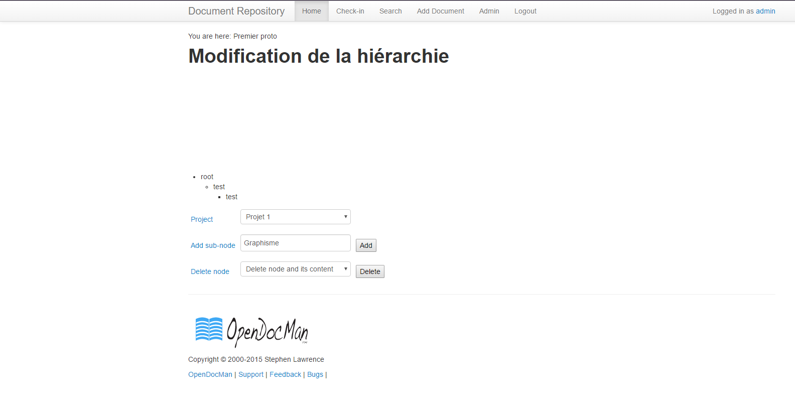

Projet Tutoré 4
Plugin OpenDocMan
Plugin OpenDocMan
Technologies retenues
Techonologies retenues
- Dérivation de la class Plugin d'ODM (PHP)
- Pas de bibliothèque Javascript type jQuery
- Implantation de l'arbre dynamique par nous même

Pourquoi un arbre "fait-maison" ?
- Plus léger
- Menu contextuel peu évolué sur les autres bibliothèques
- Plus flexible
Problèmes rencontrés
Requêtage Ajax
- Redirection récursive par OpenDocMan lui même
- URL de la requête dépasse 8 000 caractères
- Non résolu jusqu'ici